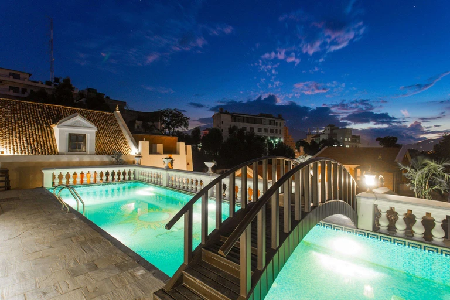

Hotels
Shangri-La Village Resort Pokhara
Pokhara is as close to the legendary Shangri-La as you can get. Shangri-La Village Resort sits on an expansive property in the centre of Pokhara, with 61 gracefully furnished rooms. On site, you have a variety of indoor and canopied outdoor dining options, plus manicured gardens to stroll through with views of Machhapuchhre and the Himalayas. This resort is the place to relax before or after a rugged-terrain trek to the Annapurna Sanctuary and base camp, at just over 4,000m (13,000ft).
Mountain Glory Forest Resort
Just outside Pokhara, Mountain Glory Forest Resort offers a refuge from the city, surrounded by trees. Dark wood panelling and floors bring a touch of intimate warmth to all of the rooms. Private room terraces afford spectacular views of the Annapurna massif, jutting skyward, beyond the forest canopy. Mountain biking, hiking and dips in the outdoor pool (weather permitting) are all popular activities here.
Hotel Shanker
Kathmandu’s luxury Hotel Shanker was converted from an opulent 19th-century Rana dynasty palace. It boasts regal gardens, an outdoor pool and chandelier-decked interiors. The Kailash restaurant serves Nepalese, Indian and Chinese cuisine – try the delicious chicken momo (Nepalese-style dumplings). Even though this hotel feels like a secluded estate, you’re actually in the centre of lively Kathmandu, right next to the Narayanhitiy Palace Museum.

Baber Mahal Vilas
Once a royal place, Baber Mahal showcases different architectural styles that have shaped Nepal’s history. From the reddish hues of Kathmandu’s Newari people to suites featuring Buddhist design aesthetics, this hotel is a design buff’s dream. Enjoy Nepali cuisine by the rooftop pool and make sure you pop into the on-site shop where you can buy souvenirs that support local artisans.
The Dwarika's Hotel
Dwarika’s is one of the most beautiful hotels in Nepal. It’s not in a fancy location, but behind its walls lies an oasis of architectural charm. It was founded by Dwarika Das Shrestha in the 1950s, partly as a project to rescue the traditional Newari crafts. Now, the hotel is practically a museum, designed in the style of traditional Newari palaces. The 80 rooms and suites are full of antiques, paintings and locally made bed linens. There’s a lovely pool in the centre of the courtyard, five restaurants, plus daily yoga classes with a famously eccentric teacher.
Meghauli Serai
Located close to Barahi, Meghauli Serai is also in the Chitwan National Park. This 30-room lodge is part of the luxury Taj hotel chain. It has a more polished feel with a sleek open stone lobby, white-cushioned sofas and local Tharu artwork decorating the walls. Each of the 30 rooms varies from balcony suites overlooking the Terai grasslands to the Rapti Mahal Suite with its own private plunge pool. You might even catch sight of an elephant at the al fresco riverside dining deck.